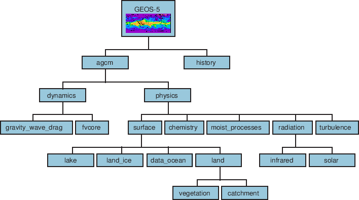
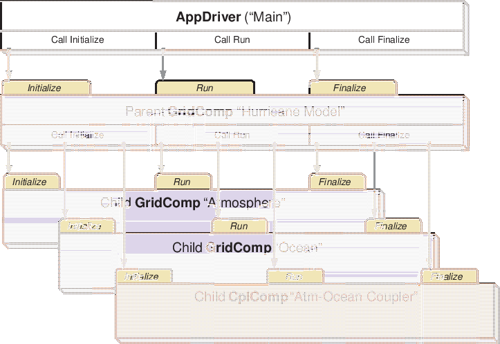
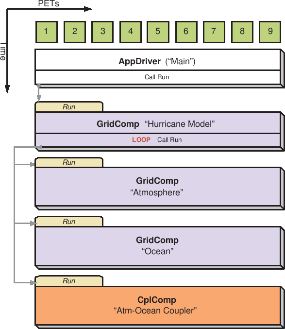
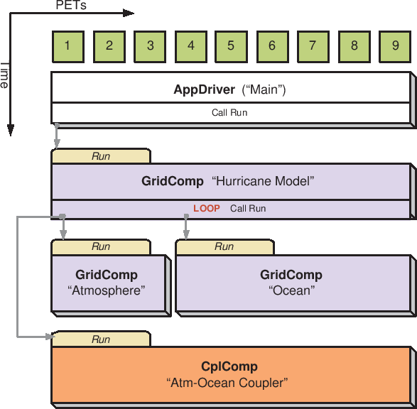
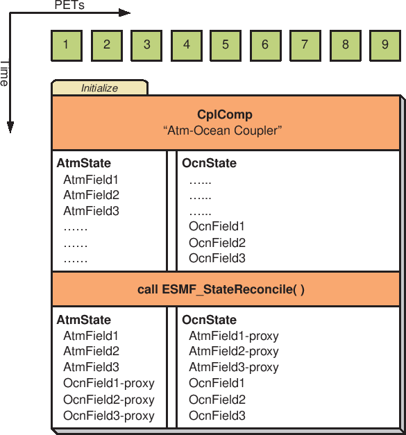

Next: 4 Infrastructure: Fields and Up: ESMC_crefdoc Previous: 2 Applications Contents
ESMF superstructure classes define an architecture for assembling Earth system applications from modeling components. A component may be defined in terms of the physical domain that it represents, such as an atmosphere or sea ice model. It may also be defined in terms of a computational function, such as a data assimilation system. Earth system research often requires that such components be coupled together to create an application. By coupling we mean the data transformations and, on parallel computing systems, data transfers, that are necessary to allow data from one component to be utilized by another. ESMF offers regridding methods and other tools to simplify the organization and execution of inter-component data exchanges.
In addition to components defined at the level of major physical domains and computational functions, components may be defined that represent smaller computational functions within larger components, such as the transformation of data between the physics and dynamics in a spectral atmosphere model, or the creation of nested higher resolution regions within a coarser grid. The objective is to couple components at varying scales both flexibly and efficiently. ESMF encourages a hierarchical application structure, in which large components branch into smaller sub-components (see Figure 2). ESMF also makes it easier for the same component to be used in multiple contexts without changes to its source code.
|
Key Features |
| Modular, component-based architecture. |
| Hierarchical assembly of components into applications. |
| Use of components in multiple contexts without modification. |
| Sequential or concurrent component execution. |
| Single program, multiple datastream (SPMD) applications for maximum portability and reconfigurability. |
| Multiple program, multiple datastream (MPMD) option for flexibility. |
There are a small number of classes in the ESMF superstructure:
The second part of an ESMF Component is user code, such as a model or data assimilation system. Users set entry points within their code so that it is callable by the framework. In practice, setting entry points means that within user code there are calls to ESMF methods that associate the name of a Fortran subroutine with a corresponding standard ESMF operation. For example, a user-written initialization routine called myOceanInit might be associated with the standard initialize routine of an ESMF Gridded Component named “myOcean” that represents an ocean model.
An ESMF coupled application typically involves a parent Gridded Component, two or more child Gridded Components and one or more Coupler Components.
The parent Gridded Component is responsible for creating the child Gridded Components that are exchanging data, for creating the Coupler, for creating the necessary Import and Export States, and for setting up the desired sequencing. The application's “main” routine calls the parent Gridded Component's initialize, run, and finalize methods in order to execute the application. For each of these standard methods, the parent Gridded Component in turn calls the corresponding methods in the child Gridded Components and the Coupler Component. For example, consider a simple coupled ocean/atmosphere simulation. When the initialize method of the parent Gridded Component is called by the application, it in turn calls the initialize methods of its child atmosphere and ocean Gridded Components, and the initialize method of an ocean-to-atmosphere Coupler Component. Figure 3 shows this schematically.
|  |
Components are allocated computational resources in the form of Persistent Execution Threads, or PETs. A list of a Component's PETs is contained in a structure called a Virtual Machine, or VM. The VM also contains information about the topology and characteristics of the underlying computer. Components are created hierarchically, with parent Components creating child Components and allocating some or all of their PETs to each one. By default ESMF creates a new VM for each child Component, which allows Components to tailor their VM resources to match their needs. In some cases, a child may want to share its parent's VM - ESMF supports this, too.
A Gridded Component may exist across all the PETs in an application. A Gridded Component may also reside on a subset of PETs in an application. These PETs may wholly coincide with, be wholly contained within, or wholly contain another Component.
|  |
When a set of Gridded Components and a Coupler runs in sequence on the same set of PETs the application is executing in a sequential mode. When Gridded Components are created and run on mutually exclusive sets of PETs, and are coupled by a Coupler Component that extends over the union of these sets, the mode of execution is concurrent.
Figure 4 illustrates a typical configuration for a simple coupled sequential application, and Figure 5 shows a possible configuration for the same application running in a concurrent mode.
Parent Components can select if and when to wait for concurrently executing child Components, synchronizing only when required.
It is possible for ESMF applications to contain some Component sets that are executing sequentially and others that are executing concurrently. We might have, for example, atmosphere and land Components created on the same subset of PETs, ocean and sea ice Components created on the remainder of PETs, and a Coupler created across all the PETs in the application.
|  |
|  |
All data transfers within an ESMF application occur within a component. For example, a Gridded Component may contain halo updates. Another example is that a Coupler Component may redistribute data between two Gridded Components. As a result, the architecture of ESMF does not depend on any particular data communication mechanism, and new communication schemes can be introduced without affecting the overall structure of the application.
Since all data communication happens within a component, a Coupler Component must be created on the union of the PETs of all the Gridded Components that it couples.
The scope of distributed objects is the VM of the currently executing Component. For this reason, all PETs in the current VM must make the same distributed object creation calls. When a Coupler Component running on a superset of a Gridded Component's PETs needs to make communication calls involving objects created by the Gridded Component, an ESMF-supplied function called ESMF_StateReconcile() creates proxy objects for those PETs that had no previous information about the distributed objects. Proxy objects contain no local data but can be used in communication calls (such as regrid or redistribute) to describe the remote source for data being moved to the current PET, or to describe the remote destination for data being moved from the local PET. Figure 6 is a simple schematic that shows the sequence of events in a reconcile call.
|  |
The ESMF design enables the user to configure ESMF applications so that data is transferred directly from one component to another, without requiring that it be copied or sent to a different data buffer as an interim step. This is likely to be the most efficient way of performing inter-component coupling. However, if desired, an application can also be configured so that data from a source component is sent to a distinct set of Coupler Component PETs for processing before being sent to its destination.
The ability to overlap computation with communication is essential for performance. When running with ESMF the user can initiate data sends during Gridded Component execution, as soon as the data is ready. Computations can then proceed simultaneously with the data transfer.
The following is a simplified Unified Modeling Language (UML) diagram showing the relationships among ESMF superstructure classes. See Appendix A, A Brief Introduction to UML, for a translation table that lists the symbols in the diagram and their meaning.
Every ESMF application needs a driver code. Typically the driver layer is implemented as the "main" of the application, although this is not strictly an ESMF requirement. For most ESMF applications the task of the application driver will be very generic: Initialize ESMF, create a top-level Component and call its Initialize, Run and Finalize methods, before destroying the top-level Component again and calling ESMF Finalize.
ESMF provides a number of different application driver templates in the $ESMF_DIR/src/Superstructure/AppDriver directory. An appropriate one can be chosen depending on how the application is to be structured:
In a sequential execution model, every Component executes on all PETs, with each Component completing execution before the next Component begins. This has the appeal of simplicity of data consumption and production: when a Gridded Component starts, all required data is available for use, and when a Gridded Component finishes, all data produced is ready for consumption by the next Gridded Component. This approach also has the possibility of less data movement if the grid and data decomposition is done such that each processor's memory contains the data needed by the next Component.
In a concurrent execution model, subgroups of PETs run Gridded Components and multiple Gridded Components are active at the same time. Data exchange must be coordinated between Gridded Components so that data deadlock does not occur. This strategy has the advantage of allowing coupling to other Gridded Components at any time during the computational process, including not having to return to the calling level of code before making data available.
Coupler Components are responsible for taking data from one Gridded Component and putting it into the form expected by another Gridded Component. This might include regridding, change of units, averaging, or binning.
Coupler Components can be written for pairwise data exchange: the Coupler Component takes data from a single Component and transforms it for use by another single Gridded Component. This simplifies the structure of the Coupler Component code.
Couplers can also be written using a hub and spoke model where a single Coupler accepts data from all other Components, can do data merging or splitting, and formats data for all other Components.
Multiple Couplers, using either of the above two models or some mixture of these approaches, are also possible.
The ESMF framework currently has Fortran interfaces for all public functions. Some functions also have C interfaces, and the number of these is expected to increase over time.
The simplest way to run an application is to run the same executable program on all PETs. Different Components can still be run on mutually exclusive PETs by using branching (e.g., if this is PET 1, 2, or 3, run Component A, if it is PET 4, 5, or 6 run Component B). This is a SPMD model, Single Program Multiple Data.
The alternative is to start a different executable program on different PETs. This is a MPMD model, Multiple Program Multiple Data. There are complications with many job control systems on multiprocessor machines in getting the different executables started, and getting inter-process communications established. ESMF currently has some support for MPMD: different Components can run as separate executables, but the Coupler that transfers data between the Components must still run on the union of their PETs. This means that the Coupler Component must be linked into all of the executables.
There are a few methods that every ESMF application must contain. First, ESMC_Initialize() and ESMC_Finalize() are in complete analogy to MPI_Init() and MPI_Finalize() known from MPI. All ESMF programs, serial or parallel, must initialize the ESMF system at the beginning, and finalize it at the end of execution. The behavior of calling any ESMF method before ESMC_Initialize(), or after ESMC_Finalize() is undefined.
Second, every ESMF Component that is accessed by an ESMF application requires that its set services routine is called through ESMC_<Grid/Cpl>CompSetServices(). The Component must implement one public entry point, its set services routine, that can be called through the ESMC_<Grid/Cpl>CompSetServices() library routine. The Component set services routine is responsible for setting entry points for the standard ESMF Component methods Initialize, Run, and Finalize.
Finally, the Component can optionally call ESMC_<Grid/Cpl>CompSetVM()
before calling
ESMC_<Grid/Cpl>CompSetServices(). Similar to
ESMC_<Grid/Cpl>CompSetServices(), the
ESMC_<Grid/Cpl>CompSetVM()
call requires a public entry point into the Component. It allows the Component
to adjust certain aspects of its execution environment, i.e. its own VM, before
it is started up.
The following sections discuss the above mentioned aspects in more detail.
INTERFACE:
int ESMC_Initialize(
int *rc, // return code
...); // optional arguments (see below)
RETURN VALUE:
Return code; equals ESMF_SUCCESS if there are no errors.DESCRIPTION:
Initialize the ESMF. This method must be called before any other ESMF methods are used. The method contains a barrier before returning, ensuring that all processes made it successfully through initialization.
Typically ESMC_Initialize() will call MPI_Init() internally unless MPI has been initialized by the user code before initializing the framework. If the MPI initialization is left to ESMC_Initialize() it inherits all of the MPI implementation dependent limitations of what may or may not be done before MPI_Init(). For instance, it is unsafe for some MPI implementations, such as MPICH, to do I/O before the MPI environment is initialized. Please consult the documentation of your MPI implementation for details.
Optional arguments are recognised. To indicate the end of the optional argument list, ESMC_ArgLast must be used. A minimal call to ESMC_Initialize() would be:
ESMC_Initialize (NULL, ESMC_ArgLast);
The optional arguments are specified using the ESMC_InitArg macros.
For example, to turn off logging so that no log files would be created, the
ESMC_Initialize() call would be coded as:
ESMC_Initialize (&rc,
ESMC_InitArgLogKindFlag(ESMC_LOGKIND_NONE),
ESMC_ArgLast);
Before exiting the application the user must call ESMC_Finalize()
to release resources and clean up the ESMF gracefully.
The arguments are:
INTERFACE:
int ESMC_Finalize(void);RETURN VALUE:
Return code; equals ESMF_SUCCESS if there are no errors.DESCRIPTION:
This must be called once on each PET before the application exits to allow ESMF to flush buffers, close open connections, and release internal resources cleanly.
In Earth system modeling, the most natural way to think about an ESMF Gridded Component, or ESMC_GridComp, is as a piece of code representing a particular physical domain, such as an atmospheric model or an ocean model. Gridded Components may also represent individual processes, such as radiation or chemistry. It's up to the application writer to decide how deeply to “componentize.”
Earth system software components tend to share a number of basic features. Most ingest and produce a variety of physical fields, refer to a (possibly noncontiguous) spatial region and a grid that is partitioned across a set of computational resources, and require a clock for things like stepping a governing set of PDEs forward in time. Most can also be divided into distinct initialize, run, and finalize computational phases. These common characteristics are used within ESMF to define a Gridded Component data structure that is tailored for Earth system modeling and yet is still flexible enough to represent a variety of domains.
A well designed Gridded Component does not store information internally about how it couples to other Gridded Components. That allows it to be used in different contexts without changes to source code. The idea here is to avoid situations in which slightly different versions of the same model source are maintained for use in different contexts - standalone vs. coupled versions, for example. Data is passed in and out of Gridded Components using an ESMF State, this is described in Section 14.1.
An ESMF Gridded Component has two parts, one which is user-written and another which is part of the framework. The user-written part is software that represents a physical domain or performs some other computational function. It forms the body of the Gridded Component. It may be a piece of legacy code, or it may be developed expressly for use with ESMF. It must contain routines with standard ESMF interfaces that can be called to initialize, run, and finalize the Gridded Component. These routines can have separate callable phases, such as distinct first and second initialization steps.
ESMF provides the Gridded Component derived type, ESMC_GridComp. An ESMC_GridComp must be created for every portion of the application that will be represented as a separate component. For example, in a climate model, there may be Gridded Components representing the land, ocean, sea ice, and atmosphere. If the application contains an ensemble of identical Gridded Components, every one has its own associated ESMC_GridComp. Each Gridded Component has its own name and is allocated a set of computational resources, in the form of an ESMF Virtual Machine, or VM.
The user-written part of a Gridded Component is associated with an ESMC_GridComp derived type through a routine called ESMC_SetServices(). This is a routine that the user must write, and declare public. Inside the SetServices routine the user must call ESMC_SetEntryPoint() methods that associate a standard ESMF operation with the name of the corresponding Fortran subroutine in their user code.
INTERFACE:
ESMC_GridComp ESMC_GridCompCreate( const char *name, // in const char *configFile, // in ESMC_Clock clock, // in int *rc // out );RETURN VALUE:
Newly created ESMC_GridComp object.DESCRIPTION:
This interface creates an ESMC_GridComp object. By default, a separate VM context will be created for each component. This implies creating a new MPI communicator and allocating additional memory to manage the VM resources.
The arguments are:
INTERFACE:
int ESMC_GridCompDestroy( ESMC_GridComp *comp // inout );RETURN VALUE:
Return code; equals ESMF_SUCCESS if there are no errors.DESCRIPTION:
Releases all resources associated with this ESMC_GridComp.
The arguments are:
INTERFACE:
int ESMC_GridCompFinalize( ESMC_GridComp comp, // inout ESMC_State importState, // inout ESMC_State exportState, // inout ESMC_Clock clock, // in int phase, // in int *userRc // out );RETURN VALUE:
Return code; equals ESMF_SUCCESS if there are no errors.DESCRIPTION:
Call the associated user finalize code for a GridComp.
The arguments are:
INTERFACE:
void *ESMC_GridCompGetInternalState( ESMC_GridComp comp, // in int *rc // out );RETURN VALUE:
Pointer to private data block that is stored in the internal state.DESCRIPTION:
Available to be called by an ESMC_GridComp at any time after ESMC_GridCompSetInternalState has been called. Since init, run, and finalize must be separate subroutines, data that they need to share in common can either be global data, or can be allocated in a private data block and the address of that block can be registered with the framework and retrieved by this call. When running multiple instantiations of an ESMC_GridComp, for example during ensemble runs, it may be simpler to maintain private data specific to each run with private data blocks. A corresponding ESMC_GridCompSetInternalState call sets the data pointer to this block, and this call retrieves the data pointer.
Only the last data block set via ESMC_GridCompSetInternalState will be accessible.
The arguments are:
INTERFACE:
int ESMC_GridCompInitialize( ESMC_GridComp comp, // inout ESMC_State importState, // inout ESMC_State exportState, // inout ESMC_Clock clock, // in int phase, // in int *userRc // out );RETURN VALUE:
Return code; equals ESMF_SUCCESS if there are no errors.DESCRIPTION:
Call the associated user initialization code for a GridComp.
The arguments are:
INTERFACE:
int ESMC_GridCompPrint( ESMC_GridComp comp // in );RETURN VALUE:
Return code; equals ESMF_SUCCESS if there are no errors.DESCRIPTION:
Prints information about an ESMC_GridComp to stdout.
The arguments are:
INTERFACE:
int ESMC_GridCompRun( ESMC_GridComp comp, // inout ESMC_State importState, // inout ESMC_State exportState, // inout ESMC_Clock clock, // in int phase, // in int *userRc // out );RETURN VALUE:
Return code; equals ESMF_SUCCESS if there are no errors.DESCRIPTION:
Call the associated user run code for a GridComp.
The arguments are:
INTERFACE:
int ESMC_GridCompSetEntryPoint(
ESMC_GridComp comp, // in
enum ESMC_Method method, // in
void (*userRoutine) // in
(ESMC_GridComp, ESMC_State, ESMC_State, ESMC_Clock *, int *),
int phase // in
);
RETURN VALUE:
Return code; equals ESMF_SUCCESS if there are no errors.DESCRIPTION:
Registers a user-supplied userRoutine as the entry point for one of the predefined Component methods. After this call the userRoutine becomes accessible via the standard Component method API.
The arguments are:
INTERFACE:
int ESMC_GridCompSetInternalState( ESMC_GridComp comp, // inout void *data // in );RETURN VALUE:
Return code; equals ESMF_SUCCESS if there are no errors.DESCRIPTION:
Available to be called by an ESMC_GridComp at any time, but expected to be most useful when called during the registration process, or initialization. Since init, run, and finalize must be separate subroutines, data that they need to share in common can either be global data, or can be allocated in a private data block and the address of that block can be registered with the framework and retrieved by subsequent calls. When running multiple instantiations of an ESMC_GridComp, for example during ensemble runs, it may be simpler to maintain private data specific to each run with private data blocks. A corresponding ESMC_GridCompGetInternalState call retrieves the data pointer.
Only the last data block set via ESMC_GridCompSetInternalState will be accessible.
The arguments are:
INTERFACE:
int ESMC_GridCompSetServices( ESMC_GridComp comp, // in void (*userRoutine)(ESMC_GridComp, int *), // in int *userRc // out );RETURN VALUE:
Return code; equals ESMF_SUCCESS if there are no errors.DESCRIPTION:
Call into user provided userRoutine which is responsible for setting Component's Initialize(), Run() and Finalize() services.
The arguments are:
The Component writer must supply a subroutine with the exact interface shown above for the userRoutine argument.
The userRoutine, when called by the framework, must make successive calls to ESMC_GridCompSetEntryPoint() to preset callback routines for standard Component Initialize(), Run() and Finalize() methods.
In a large, multi-component application such as a weather forecasting or climate prediction system running within ESMF, physical domains and major system functions are represented as Gridded Components (see Section 11.1). A Coupler Component, or ESMC_CplComp, arranges and executes the data transformations between the Gridded Components. Ideally, Coupler Components should contain all the information about inter-component communication for an application. This enables the Gridded Components in the application to be used in multiple contexts; that is, used in different coupled configurations without changes to their source code. For example, the same atmosphere might in one case be coupled to an ocean in a hurricane prediction model, and to a data assimilation system for numerical weather prediction in another. A single Coupler Component can couple two or more Gridded Components.
Like Gridded Components, Coupler Components have two parts, one that is provided by the user and another that is part of the framework. The user-written portion of the software is the coupling code necessary for a particular exchange between Gridded Components. This portion of the Coupler Component code must be divided into separately callable initialize, run, and finalize methods. The interfaces for these methods are prescribed by ESMF.
The term “user-written” is somewhat misleading here, since within a Coupler Component the user can leverage ESMF infrastructure software for regridding, redistribution, lower-level communications, calendar management, and other functions. However, ESMF is unlikely to offer all the software necessary to customize a data transfer between Gridded Components. For instance, ESMF does not currently offer tools for unit tranformations or time averaging operations, so users must manage those operations themselves.
The second part of a Coupler Component is the ESMC_CplComp derived type within ESMF. The user must create one of these types to represent a specific coupling function, such as the regular transfer of data between a data assimilation system and an atmospheric model. 1
The user-written part of a Coupler Component is associated with an ESMC_CplComp derived type through a routine called ESMC_SetServices(). This is a routine that the user must write and declare public. Inside the ESMC_SetServices() routine the user must call ESMC_SetEntryPoint() methods that associate a standard ESMF operation with the name of the corresponding Fortran subroutine in their user code. For example, a user routine called “couplerInit” might be associated with the standard initialize routine in a Coupler Component.
INTERFACE:
ESMC_CplComp ESMC_CplCompCreate( const char *name, // in const char *configFile, // in ESMC_Clock clock, // in int *rc // out );RETURN VALUE:
Newly created ESMC_CplComp object.DESCRIPTION:
This interface creates an ESMC_CplComp object. By default, a separate VM context will be created for each component. This implies creating a new MPI communicator and allocating additional memory to manage the VM resources.
The arguments are:
INTERFACE:
int ESMC_CplCompDestroy( ESMC_CplComp *comp // inout );RETURN VALUE:
Return code; equals ESMF_SUCCESS if there are no errors.DESCRIPTION:
Releases all resources associated with this ESMC_CplComp.
The arguments are:
INTERFACE:
int ESMC_CplCompFinalize( ESMC_CplComp comp, // inout ESMC_State importState, // inout ESMC_State exportState, // inout ESMC_Clock clock, // in int phase, // in int *userRc // out );RETURN VALUE:
Return code; equals ESMF_SUCCESS if there are no errors.DESCRIPTION:
Call the associated user finalize code for a CplComp.
The arguments are:
INTERFACE:
void *ESMC_CplCompGetInternalState( ESMC_CplComp comp, //in int *rc // out );RETURN VALUE:
Pointer to private data block that is stored in the internal state.DESCRIPTION:
Available to be called by an ESMC_CplComp at any time after ESMC_CplCompSetInternalState has been called. Since init, run, and finalize must be separate subroutines, data that they need to share in common can either be global data, or can be allocated in a private data block and the address of that block can be registered with the framework and retrieved by this call. When running multiple instantiations of an ESMC_CplComp, for example during ensemble runs, it may be simpler to maintain private data specific to each run with private data blocks. A corresponding ESMC_CplCompSetInternalState call sets the data pointer to this block, and this call retrieves the data pointer.
Only the last data block set via ESMC_CplCompSetInternalState will be accessible.
The arguments are:
INTERFACE:
int ESMC_CplCompInitialize( ESMC_CplComp comp, // inout ESMC_State importState, // inout ESMC_State exportState, // inout ESMC_Clock clock, // in int phase, // in int *userRc // out );RETURN VALUE:
Return code; equals ESMF_SUCCESS if there are no errors.DESCRIPTION:
Call the associated user initialize code for a CplComp.
The arguments are:
INTERFACE:
int ESMC_CplCompPrint( ESMC_CplComp comp // in );RETURN VALUE:
Return code; equals ESMF_SUCCESS if there are no errors.DESCRIPTION:
Prints information about an ESMC_CplComp to stdout.
The arguments are:
INTERFACE:
int ESMC_CplCompRun( ESMC_CplComp comp, // inout ESMC_State importState, // inout ESMC_State exportState, // inout ESMC_Clock clock, // in int phase, // in int *userRc // out );RETURN VALUE:
Return code; equals ESMF_SUCCESS if there are no errors.DESCRIPTION:
Call the associated user run code for a CplComp.
The arguments are:
INTERFACE:
int ESMC_CplCompSetEntryPoint(
ESMC_CplComp comp, // in
enum ESMC_Method method, // in
void (*userRoutine) // in
(ESMC_CplComp, ESMC_State, ESMC_State, ESMC_Clock *, int *),
int phase // in
);
RETURN VALUE:
Return code; equals ESMF_SUCCESS if there are no errors.DESCRIPTION:
Registers a user-supplied userRoutine as the entry point for one of the predefined Component methods. After this call the userRoutine becomes accessible via the standard Component method API.
The arguments are:
INTERFACE:
int ESMC_CplCompSetInternalState( ESMC_CplComp comp, // inout void *data // in );RETURN VALUE:
Return code; equals ESMF_SUCCESS if there are no errors.DESCRIPTION:
Available to be called by an ESMC_CplComp at any time, but expected to be most useful when called during the registration process, or initialization. Since init, run, and finalize must be separate subroutines, data that they need to share in common can either be global data, or can be allocated in a private data block and the address of that block can be registered with the framework and retrieved by subsequent calls. When running multiple instantiations of an ESMC_CplComp, for example during ensemble runs, it may be simpler to maintain private data specific to each run with private data blocks. A corresponding ESMC_CplCompGetInternalState call retrieves the data pointer.
Only the last data block set via ESMC_CplCompSetInternalState will be accessible.
The arguments are:
INTERFACE:
int ESMC_CplCompSetServices( ESMC_CplComp comp, // in void (*userRoutine)(ESMC_CplComp, int *), // in int *userRc // out );RETURN VALUE:
Return code; equals ESMF_SUCCESS if there are no errors.DESCRIPTION:
Call into user provided userRoutine which is responsible for setting Component's Initialize(), Run() and Finalize() services.
The arguments are:
The Component writer must supply a subroutine with the exact interface shown above for the userRoutine argument.
The userRoutine, when called by the framework, must make successive calls to ESMC_CplCompSetEntryPoint() to preset callback routines for standard Component Initialize(), Run() and Finalize() methods.
In Earth system modeling, a particular piece of code representing a physical domain, such as an atmospheric model or an ocean model, is typically implemented as an ESMF Gridded Component, or ESMC_GridComp. However, there are times when physical domains, or realms, need to be represented, but aren't actual pieces of code, or software. These domains can be implemented as ESMF Science Components, or ESMC_SciComp.
Unlike Gridded and Coupler Components, Science Components are not associated with software; they don't include execution routines such as initialize, run and finalize.
INTERFACE:
ESMC_SciComp ESMC_SciCompCreate( const char *name, // in int *rc // out );RETURN VALUE:
Newly created ESMC_SciComp object.DESCRIPTION:
This interface creates an ESMC_SciComp object.
The arguments are:
INTERFACE:
int ESMC_SciCompDestroy( ESMC_SciComp *comp // inout );RETURN VALUE:
Return code; equals ESMF_SUCCESS if there are no errors.DESCRIPTION:
Releases all resources associated with this ESMC_SciComp.
The arguments are:
INTERFACE:
int ESMC_SciCompPrint( ESMC_SciComp comp // in );RETURN VALUE:
Return code; equals ESMF_SUCCESS if there are no errors.DESCRIPTION:
Prints information about an ESMC_SciComp to stdout.
The arguments are:
A State contains the data and metadata to be transferred between ESMF Components. It is an important class, because it defines a standard for how data is represented in data transfers between Earth science components. The State construct is a rational compromise between a fully prescribed interface - one that would dictate what specific fields should be transferred between components - and an interface in which data structures are completely ad hoc.
There are two types of States, import and export. An import State contains data that is necessary for a Gridded Component or Coupler Component to execute, and an export State contains the data that a Gridded Component or Coupler Component can make available.
States can contain Arrays, ArrayBundles, Fields, FieldBundles, and other States. However, the current C API only provides State access to Arrays, Fields and nested States. States cannot directly contain native language arrays (i.e. Fortran or C style arrays). Objects in a State must span the VM on which they are running. For sequentially executing components which run on the same set of PETs this happens by calling the object create methods on each PET, creating the object in unison. For concurrently executing components which are running on subsets of PETs, an additional method, called ESMF_StateReconcile(), is provided by ESMF to broadcast information about objects which were created in sub-components. Currently this method is only available through the ESMF Fortran API. Hence the Coupler Component reponsible for reconciling States from Component that execute on subsets of PETs must be written in Fortran.
State methods include creation and deletion, adding and retrieving data items, and performing queries.
One important request by the user community during the ESMF object design was that there be no communication overhead or synchronization when creating distributed ESMF objects. As a consequence it is required to create these objects in unison across all PETs in order to keep the ESMF object identification in sync.
INTERFACE:
int ESMC_StateAddArray( ESMC_State state, // in ESMC_Array array // in );RETURN VALUE:
Return code; equals ESMF_SUCCESS if there are no errors.DESCRIPTION:
Add an Array object to a ESMC_State object.
The arguments are:
INTERFACE:
int ESMC_StateAddField( ESMC_State state, // in ESMC_Field field // in );RETURN VALUE:
Return code; equals ESMF_SUCCESS if there are no errors.DESCRIPTION:
Add an Array object to a ESMC_State object.
The arguments are:
INTERFACE:
ESMC_State ESMC_StateCreate( const char *name, // in int *rc // out );RETURN VALUE:
Newly created ESMC_State object.DESCRIPTION:
Create an ESMC_State object.
The arguments are:
INTERFACE:
int ESMC_StateDestroy( ESMC_State *state // in );RETURN VALUE:
Return code; equals ESMF_SUCCESS if there are no errors.DESCRIPTION:
Destroy a ESMC_State object.
The arguments are:
INTERFACE:
int ESMC_StateGetArray( ESMC_State state, // in const char *name, // in ESMC_Array *array // out );RETURN VALUE:
Return code; equals ESMF_SUCCESS if there are no errors.DESCRIPTION:
Obtain a pointer to an ESMC_Array object contained within a State.
The arguments are:
INTERFACE:
int ESMC_StateGetField( ESMC_State state, // in const char *name, // in ESMC_Field *field // out );RETURN VALUE:
Return code; equals ESMF_SUCCESS if there are no errors.DESCRIPTION:
Obtain a pointer to a ESMC_Field object contained within a State.
The arguments are:
INTERFACE:
int ESMC_StatePrint( ESMC_State state // in );RETURN VALUE:
Return code; equals ESMF_SUCCESS if there are no errors.DESCRIPTION:
Prints the contents of a ESMC_State object.
The arguments are:
esmf_support@ucar.edu